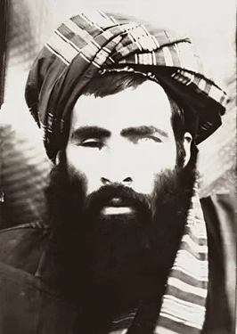
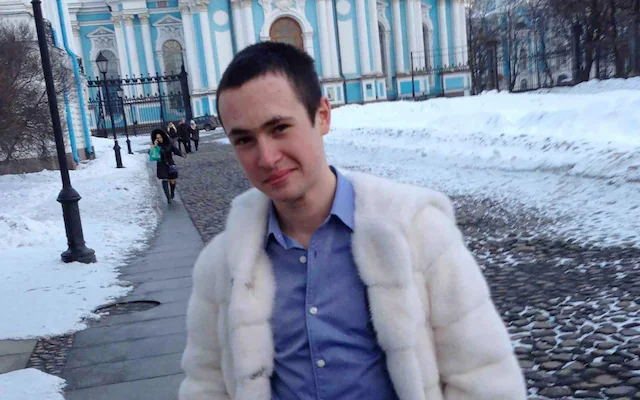
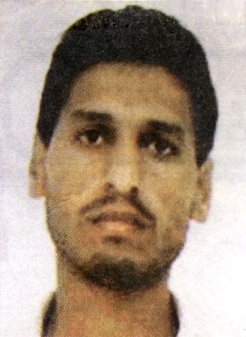
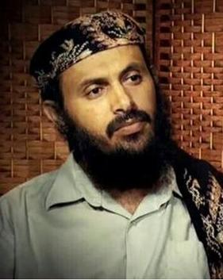
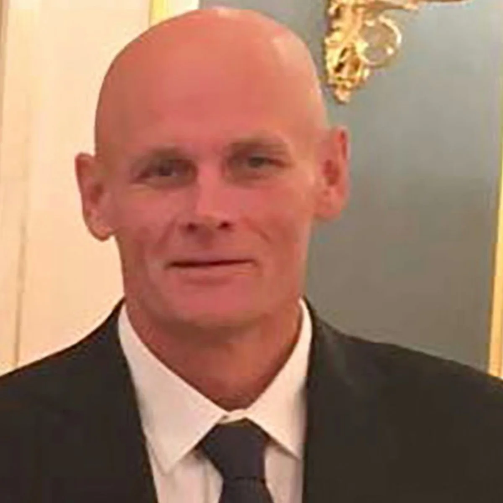
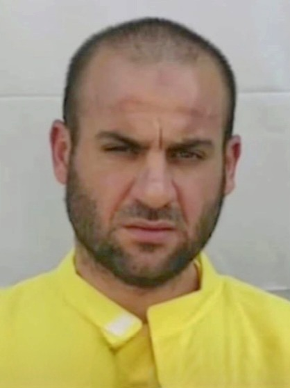
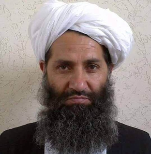

Mysterious people who have few to no pictures on the internet.
This is not meant to cause a Streisand effect against the people listed below, nor do I think it will given the lack of traffic this site (and thus page) gets and will get at any point in the future.
I simply find interesting that there influential people exist who have few to no available pictures on the internet. (I'm fairly confident that intelligence agencies have current, or at least more current, pictures.)
If you are on this list and want me to take your picture down, please contact me. If you are not on here and believe you should be, you may also contact me, but make sure to include a picture so I can verify it's legitimate.
In no particular order and with pictures I could find online.
Link: David Benatar
Link: Greg Egan
Greg is adamant that no picture of him exists on the internet per his website.
https://www.gregegan.net/images/GregEgan.htmLink: Mullah Omar

Link: Pavel Prigozhin

Link: Mohammed Deif

Link: Qasim al-Raymi

Link: Dmitry Utkin

Link: Xi Mingze

Link: First photos of Vladimir Putin’s ‘secret’ purported eldest son emerge online: report
Link: Thomas Pynchon
Link: Abu Ibrahim al-Hashimi al-Qurashi

Link: Hibatullah Akhundzada

Link: Satoshi Nakamoto